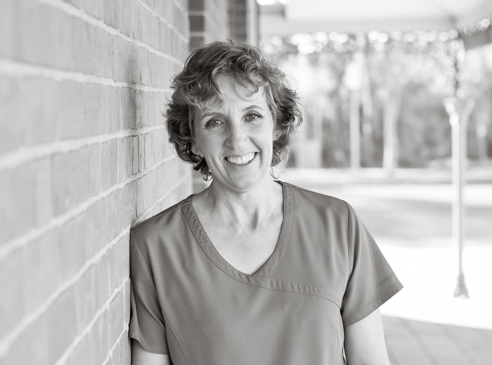

Welcome to my dental class website! I'm Dr Mary-Anne Slater. Here you can find all the resources you need.

I graduated from Adelaide University, fulfilling a childhood dream to be a dentist. As a new graduate I moved to Wagga in 1984 where I planned to stay for a couple of years, and yet Wagga has been home ever since! Working both in private practice and at the Wagga Base Hospital, until 1995 when I set up practice at The Esplanade.
Passionate about anything dental, my special interests include preventive dentistry and identifying the high caries risk patient, children's dentistry, treating anxious patients of any age, diagnosis and treatment planning, and implant dentistry. I spend my day off private practice on Fridays at CSU tutoring and lecturing dental students, which brings great joy. I also enthusiastically welcome work experience students from high school and TAFE and university, to glimpse life in a dynamic general dental practice.
Outside of dentistry I love spending time with my family (Don and our grown up children George, Arthur, Henry and Jane) and friends, keeping fit, cooking, gardening, reading and travelling (when COVID 19 allows)!
Quick video showing how dental assistant can help child count dinosaur teeth. Note how child puts bib on himself at the end signaling he is ready to have his own teeth counted.
Interactive Counting Dinosaurs Teeth (7:59)
Prior to child exam, do dinosaurs, with child always in charge and always doing something with their hands.
Child Exam (6:17)
Child must always feel in control, including controlling the chair, and controlling whether you're looking MM or MX or left or right.
Child examination (9:00)
Ideal for any child exam (under 10), or any treatment to:
Not hurt
Take less than 30 minutes
Child always feels they are in control
Ask open ended questions and play guessing games with them, as they know the answer, so they are in control
Have something in child's hand so stimulating their brain, as well as feeling in control
Note how child says he doesn't want any air and then is quite happy to use the air by the end of the visit.
Child Dental Examination (19:02)
Patient familiarization with dental exam with toy crocodile and subsequent hands-on involvement with dental exam itself.
Teaching 222 (7:27)
Every visit to the practice, 222 is reaffirmed. Eventually they learn- some take longer than others. Spitting out toothpaste and not rinsing twice a day, is the most effective medium of fluoride, the most effective primary prevention we can teach.
222 The student has become the master (3:43)
Patient teaching us 222.
Silver Fluoride Placement (4:11)
Silver Fluoride Fantastic for arresting decay in non-symptomatic teeth.
See "General Information" regarding how to place.
Sticky Fissures PRR (3:11)
Important to be very quick and effective. Count out loud so child knows how long you are drilling for, in this case 3 lots of 5 seconds with high speed and 2 lots of 5 speed with ultrasonic.
PRR/ Etch Prime Bond (2:09)
Usually patient helps with this by holding and dunking the microbrush and helping applying it to their teeth.
Placing PRR (2:52)
I find composite more durable than fissure seal material, Fuji, flowable composite. In 10 years, it is more likely the composite is still in place compared to all other materials.
Stainless Steel Crown (16:33)
Placing stainless steel crown in dental chair with hall technique.
Journal articles
Here are the names of some articles you might like. You can request journal articles from the ADA library by sending an email to library@ada.org.au.
222 Professor Svante Twetmen ANZ SPD 2014 RK Hall Lecture Series
BRUXISM- Disorder, dysfunction or day to day ADA News Bulletin Feb 2021
FLUORIDE- Guidelines for use of fluorides in Australia update 2019 ADJ2020
FLUORIDE -Practical guidelines ADA NSW Bulletin June 2020
FLUORIDE- Caries preventative effect of fluoride toothpaste a systematic review Twetman
DOI 2003